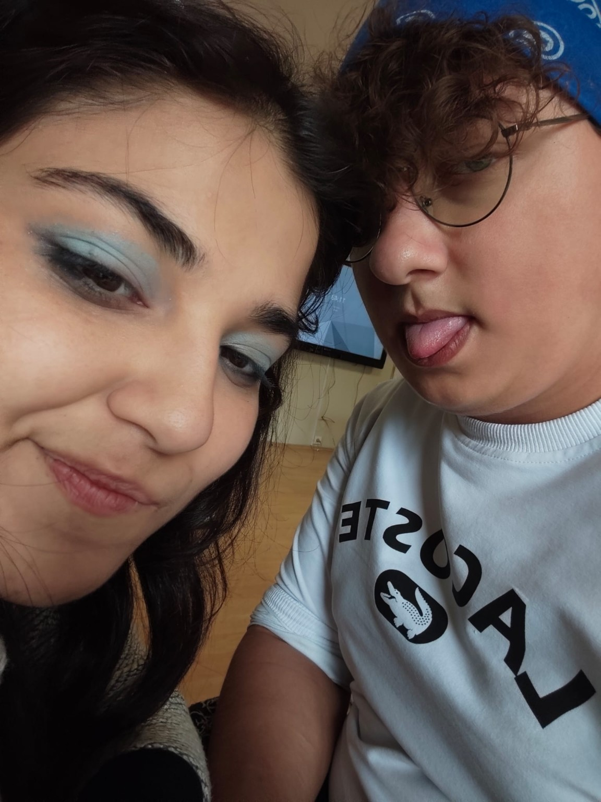

Happy Birthday,
my magnolia.
Somewhere among all the days I have lived, there is a quiet little chapter that began with you—and I hope it never stops unfolding.
Open your little letter ↓
A birthday letter
Happy birthday, my magnolia.
Sometimes I wonder how a person can arrive so quietly and still change the shape of so many ordinary days. Then I think of you, and I understand a little more. You became a favorite thought, a familiar warmth, a name that can turn an ordinary moment into a memory I want to keep.
If our time together were a scrapbook, I would save the smallest things: the silly faces, the unplanned laughs, the moments when neither of us needed to say much at all. I would keep them beside the photographs, like little pressed flowers—proof that something beautiful once happened here, and is still happening.
I know a photograph can only hold one second. It cannot keep the sound of a laugh, the feeling of being understood, or all the words that stayed in our hearts instead of reaching our lips. But when I look at our picture, I see more than a picture. I see a tiny doorway back to a moment that belongs to us.
My magnolia, I hope this new year of your life is gentle with you. I hope it brings you mornings that feel full of possibility, dreams that grow braver with time, and people who remind you how precious your heart is. I hope you learn to see in yourself the good that others are lucky enough to notice in you.
And if one day we look back at these years from far away, I hope we remember them kindly: not because every moment was perfect, but because they were real. Because somewhere in the middle of growing up and figuring life out, we found little reasons to smile, stories to tell, and memories that became ours.
I cannot ask time to stand still—not even for the moments I wish I could keep forever. But I can be grateful that they happened. I can hold them carefully, like petals between the pages of a book, and carry their softness with me.
So today, I celebrate you: your past, your becoming, and every unwritten page waiting ahead. Thank you for being part of my story. If life is a garden full of seasons, I hope this year lets you bloom in ways you have only dreamed of.
Happy birthday, my magnolia.
May life always leave room for you to bloom. ♡
One more thing…
If I could tuck one thing into the pages of this little website, it would be a promise to remember the small things: our faces in this photo, the laughter behind it, and all the ordinary seconds that became precious simply because we shared them.